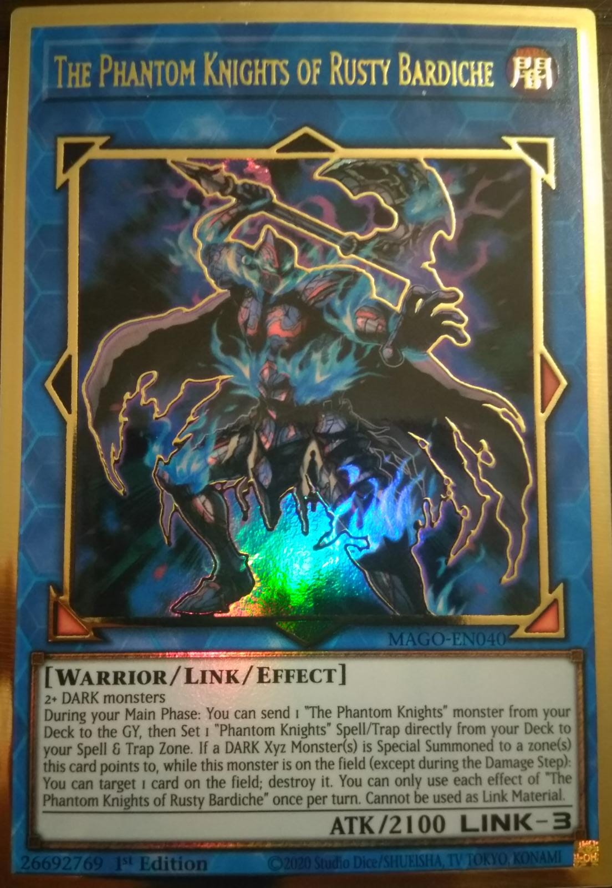

Yugioh ist ein im Jahre 1999 entstandendes Sammelkartenspiel und vermutlich nach Magic das bekannteste auf der Welt
Um gegen einen anderen Spieler zu antreten zu können
benötigt man ein Main Deck welches aus mindestens 40 Karten besteht und ein extra Deck
aus maximal 15 Karten besteht. Im Spiel gibt es drei Unterschiedliche Karten Typen
Monster, Zauber und Fallenkarten welche jeweils Sub-Kategorien
haben. Um nähere Informationen zu erlangen verlinke ich unterhalb ein video wolle alle Arten der Karten erklärt werden.
Das balancing wird in yugioh nicht mit einer Set rotation wie in Magic gelöst.
In Yugioh wird stattesen eine Banlist geregelt. Unten ist eine Link
mit der aktuellen Banlist.
Auf der Banlist befinden sich hauptsächlich unfaire Karten oder Karten von Deckthemen welche in der Meta zu dominant
werden geworden sind.
Unterhalb auch ein Link mit einer Auflistung von der derzeitigen Meta.
Die Banlist
Meta Liste
